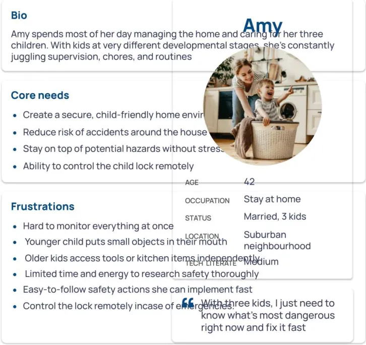
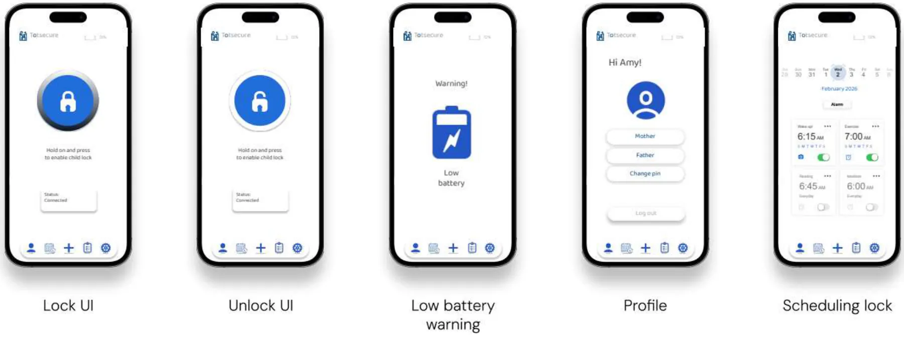
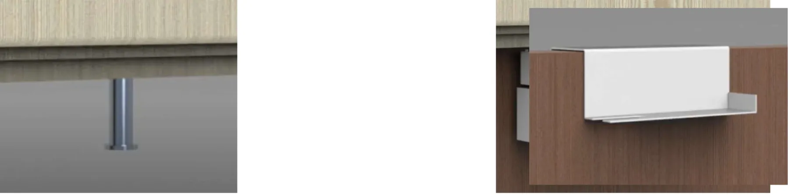

Child locks are designed for children. The parents were forgotten.
Challenge
Design a child-safety lock for doors and cupboards that adults can open manually, that can be switched on or off remotely, and that stays reliable.
Research
Parent injury and smart-home adoption data, a room-by-room risk ranking, a persona (“Amy”), and a measurable requirements matrix.
Outcome
Totsecure: a remote-controlled lock with an app, scheduled locking, battery backup and an emergency manual override, built as a working ESP32 prototype.
Most home injuries are preventable, according to parents.
of injuries could be avoided with appropriate child-proofing, according to parents
of children 10 and under have been injured in their homes, according to their parents
Parents already trust smart devices for safety
Child-proofing device categories, by parent preference
Smart locks are already trusted by more than half of parents, but they're built for front doors, not kitchen cabinets. Parents ranked the kitchen, basement and garage as the least safe rooms in the house. That's where the chemicals and tools are, and where a remote-controllable lock matters most.
Meet Amy: three kids, zero spare minutes.
Amy (42, stay-at-home parent, suburban, medium tech literacy) spends most of her day managing the home and caring for three children at very different developmental stages.
Her youngest puts small objects in their mouth; her oldest can already reach tools and kitchen items. One lock setting can't fit all three.
“With three kids, I just need to know what's most dangerous right now, and fix it fast.”Amy · persona

Stay on top of hazards without stress.
She can't monitor everything at once.
Lock or unlock every cabinet from one app, from anywhere in the house.Limited time to research safety.
She needs easy-to-follow actions she can do fast.
One big hold-to-toggle button, and installation in minutes.Control in an emergency.
Remote control is useless if the battery dies at the wrong moment.
Backup battery, low-battery warning and a manual override.Turning needs into numbers I could test against.
I translated needs into performance measures with target values, then benchmarked them against existing products (installation from 5 to 15 minutes, prices from $30 to $120).
- Manual locking success rate (%)
- Force withstood (lb)
- Max force to unlock manually (lb)
- Time to unlock manually (s)
- Remote activation success rate (%)
- Remote response time
- Remote range (ft)
- Number of connected devices
- Compatible doors & cabinets
- ASTM / EN / ISO compliance
- Installation time (min)
- Product cost ($)
Every sketch had to answer: adult opens, child can't.

Hold to lock. Hold to unlock. That's the whole interface.
A deliberate press-and-hold interaction prevents accidental unlocks (by adults or curious kids with a phone). Try it:
- Remote locking of doors, cupboards & cabinets
- Real-time control via mobile app
- Scheduled locking
- Emergency manual override
- Backup battery system
- Easy installation


Then I built it, for real.
A working 3D-printed prototype: an ESP32-C3 mini microcontroller, a servo-driven gear and rack latch, buck converter, battery, status LED, switch and a manual override, all documented in full CAD drawings.


What I'd validate next.
Talk to real parents, not just the data. The persona is grounded in survey statistics. Interviews and in-home observation would test whether “remote” is a real need or a nice-to-have.
Test the hold-to-toggle interaction for speed and error rate under realistic stress, like a child crying or hands full.
Run the requirements matrix against the prototype: unlock force, response time and install time, measured rather than estimated.
Calidus →